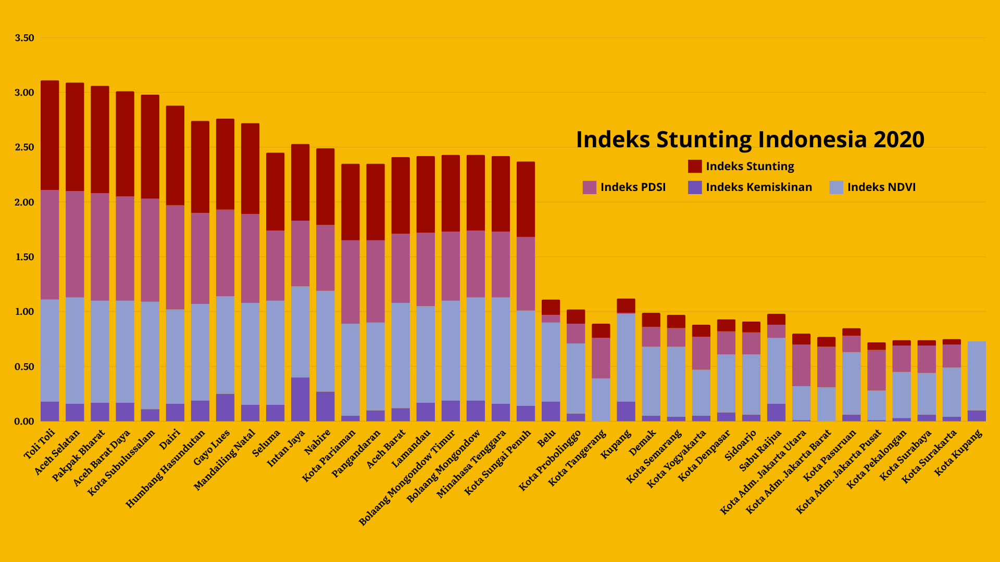

Indeks Stunting 2020

Model stunting berhasil dibangun menggunakan data remote sensing yang terdiri atas NDVI (Normalized Difference Vegetation Index), PDSI (Palmer Drought Severity Index), dan model kemiskinan yang telah dibangun sebelumnya. Tingkat stunting tertinggi pada tahun 2020 dominan berlokasi di Pulau Papua, Pulau Kalimantan, Pulau Sulawesi, dan Pulau Sumatera.
Model stunting dibangun melibatkan metode principal component analysis (PCA) pada proses pembobotan. Pada tahun 2020, diperoleh indeks stunting tertinggi berlokasi di Kabupaten Toli-Toli (Provinsi Sulawesi Tengah) dan Aceh Selatan (Provinsi Aceh)
V
